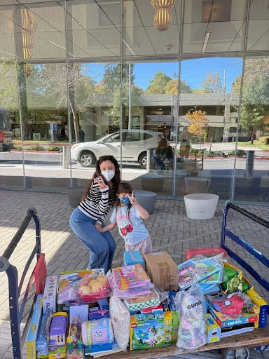
Play & imagination
The 2026 toy drive
Toys, games, and activities—gathered with love for our warriors.
Our foundation in action
Little moments of joy,
shared with love.
Toys, birthday surprises, creative play, and care for families. Here’s a look at how Lola’s Butterfly Effect Foundation brings its purpose to life.
Explore our projectsSelect any photo to take a closer look.

Play & imagination
Toys, games, and activities—gathered with love for our warriors.
Care for families
Our snack carts offer families a little something to reach for. Snacks, drinks, and a reminder that they’re cared for.
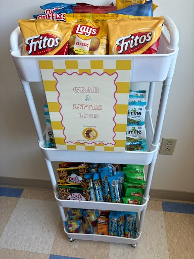
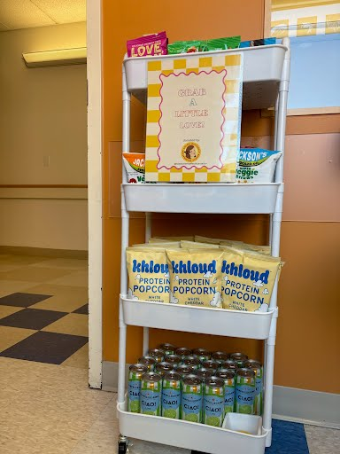
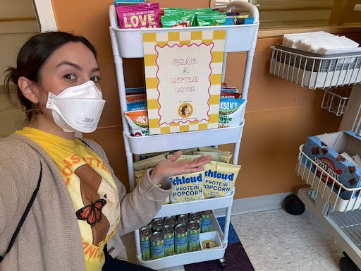
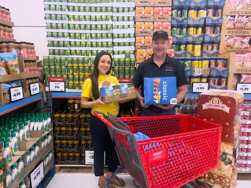
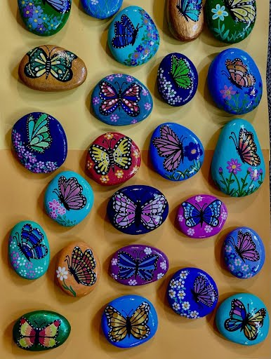
A kindness, made by hand
Colorful butterflies turn small stones into little keepsakes of kindness. These hand-painted rocks are donated for our warriors, bringing a little color, imagination, and encouragement to their day.
Donated in collaboration with Art on the Rocks PNW
A day to celebrate
Because a birthday deserves a little celebration. These colorful bags are one way we share love with our warriors.
A little surprise. A whole lot of heart.
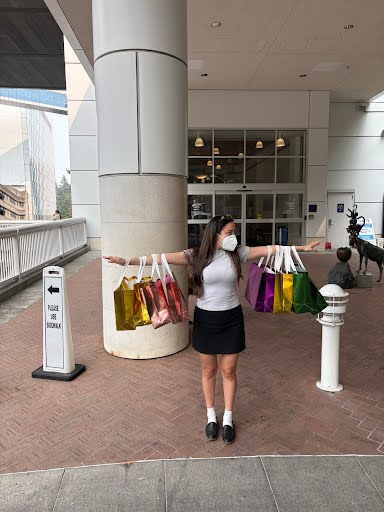
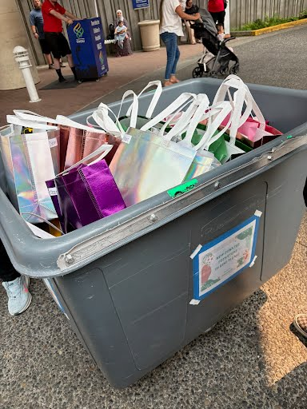
Play & imagination
Slime kits and creative projects invite a little play, color, and curiosity. They’re some of the ways we put the foundation’s mission into practice.
A chance to make something wonderfully their own.
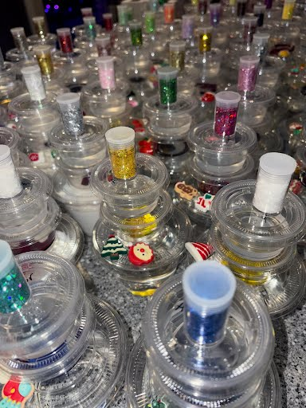
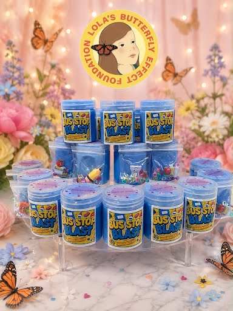
The heart behind the work
Moments of wonder, memories held close, and a reminder to keep childhood cancer in view. The love behind our foundation lives here, too.
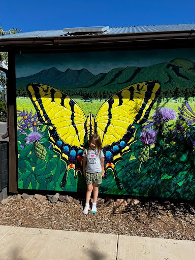
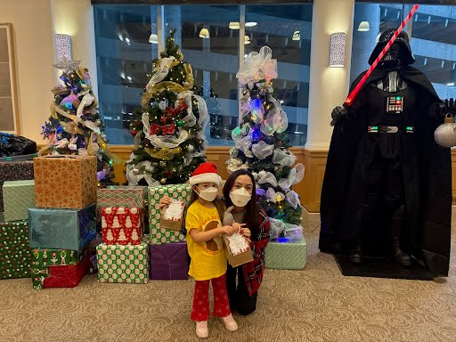
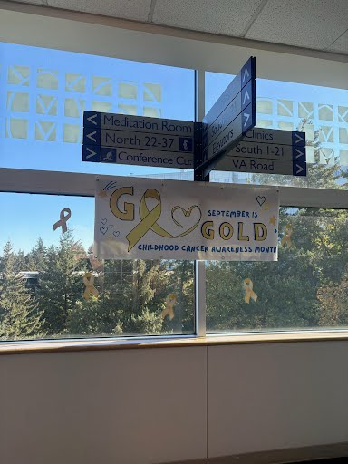
Be part of the effect
Want to support a project, share an idea, or learn more? We’d love to hear from you.